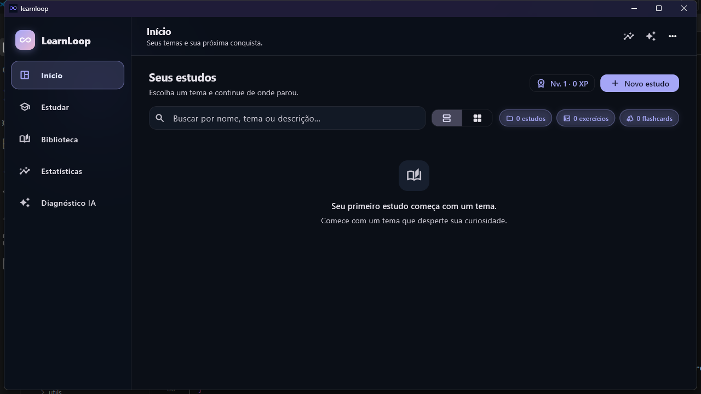
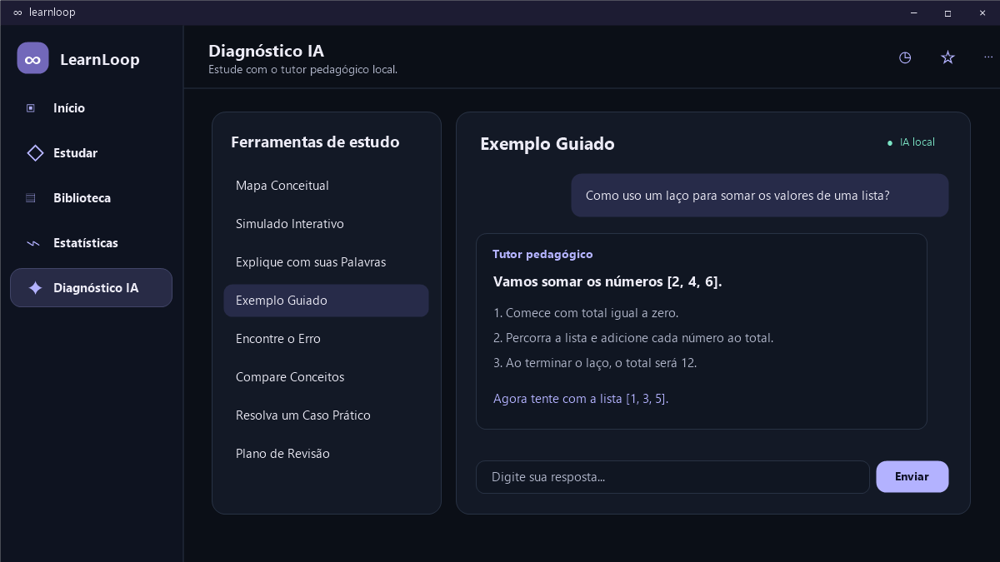

Agenda e lembretes
Planeje tarefas com prazo e prioridade, marque o que concluiu e acompanhe sua meta semanal de dias de estudo.
Seu espaço de estudo
Reúna materiais em trilhas, pratique com exercícios, revise com flashcards e tire dúvidas com um tutor de IA que roda no seu dispositivo.

Recursos
Explore as telas do LearnLoop e veja como cada recurso cabe na sua rotina de estudo.
Planeje tarefas com prazo e prioridade, marque o que concluiu e acompanhe sua meta semanal de dias de estudo.
Reserve 15, 25 ou 45 minutos para uma atividade. Pause e retome o temporizador quando precisar.
Reúna resumos, videoaulas e podcasts. Importe PDFs, Markdown e TXT para gerar materiais para uma trilha.
Primeiros passos
Abra Novo estudo e escolha categoria, tema e nível. Defina um foco específico e ajuste o idioma conforme necessário.
Selecione Gerar, confira a prévia e salve a trilha. Ative Atualizar fontes na internet se quiser consultar fontes recentes durante a geração.
Abra a trilha para ler os materiais, responder exercícios e revisar flashcards. Planeje a próxima sessão na Agenda de estudos e confira o histórico em Estatísticas.
Tutor com IA local
Peça um exemplo guiado, responda a um simulado interativo ou monte um plano de revisão. As respostas são geradas no dispositivo.
.litertlm compatível.
Perguntas frequentes
Sim. Trilhas salvas, resumos locais, exercícios, flashcards e sessões de foco funcionam offline. O tutor requer um modelo já baixado ou vinculado. Busca de materiais e reprodução de mídia remota precisam de conexão.
Você pode importar PDFs com texto, arquivos Markdown ou TXT de até 25 MiB. PDFs digitalizados precisam de OCR antes da importação.
Conecte os dois dispositivos à mesma rede e mantenha o LearnLoop aberto em ambos. Em Configurações, escolha Dispositivo principal e ative a sincronização. No segundo aparelho, use Conectar a outro dispositivo e informe o IP local e o código exibidos no primeiro.
A sincronização troca trilhas, materiais compatíveis e progresso. Use uma rede de confiança, pois a transferência usa HTTP sem criptografia.
O projeto tem versões para Android 11 ou superior, Windows, Linux, macOS e iOS. A disponibilidade dos arquivos depende da versão publicada. O motor de IA local tem requisitos próprios de arquitetura e hardware.
Confira a disponibilidade dos instaladores e as plataformas compatíveis.
Ir para downloads